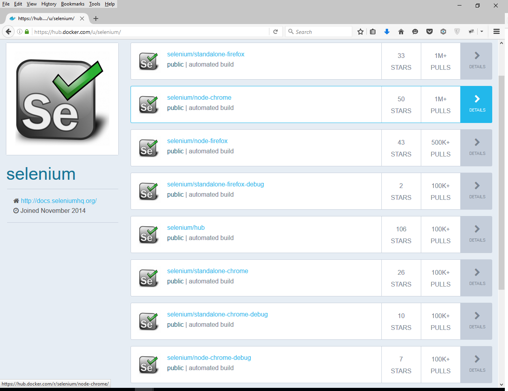
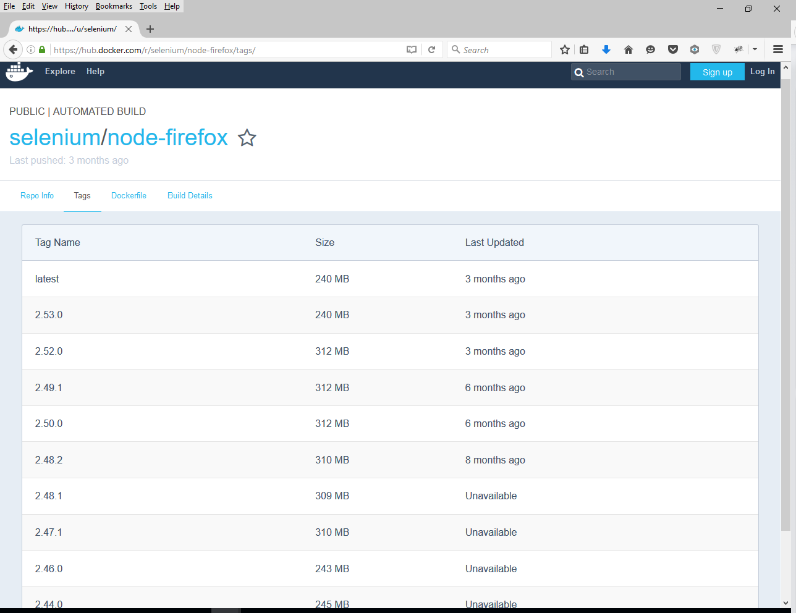

RSelenium: Docker
Introduction
The goal of this document to illustrate the use of docker and the Selenium project. The selenium project has released a number of containers to run various tools in the suite.
Preparing docker on Windows
The following outlines preparing a windows 10 home installation to run docker containers.
Installing docker
Depending on your version of windows there are currently two ways of running docker. Details are given at Docker. For the version of windows Being used in this vignette (win 10 home) the older Docker toolbox is what we are going to use to run containers.
Download the .exe for Docker toolbox and begin the install. Follow the instructions on the toolbox install windows page.
Clicking on the Docker Quickstart terminal link should eventually give you a terminal that resembles the following:

Preparing docker on Linux
The following outlines preparing a ubuntu 16.04 installation to run docker containers.
Installing docker
For a general guide for various Linux distros see Docker
Ubuntu 16.04
Run system update firstly
$ sudo apt-get update
Add the official Docker GPG key to your system
$ sudo apt-key adv --keyserver hkp://p80.pool.sks-keyservers.net:80 --recv-keys 58118E89F3A912897C070ADBF76221572C52609DAdd the Docker repository to APT sources:
$ echo "deb https://apt.dockerproject.org/repo ubuntu-xenial main" | sudo tee /etc/apt/sources.list.d/docker.list
Update the package database:
sudo apt-get updateNow you should be able to install Docker
sudo apt-get install -y docker-engineStart the docker daemon.
$ sudo service docker startYou can check that the Docker is working by running a test container:
For now run as sudo
$ sudo docker run hello-world
Running without sudo
If you want to run docker without sudo you can create a docker group and add the appropriate user to that group see Docker.
Using Selenium Docker images
The official docker repository can be viewed here at Docker Hub.

Whats in an image?
Lets examine the selenium/node-firefox image. The first thing to note is the Tags. 
Clicking this gives us the various tagged versions of this image. Clicking Dockerfile allows us to view the source behind the image:
FROM selenium/node-base:2.53.0
MAINTAINER Selenium <selenium-developers@googlegroups.com>
USER root #=========
# Firefox
#=========
ENV FIREFOX_VERSION 45.0.2 we can see that this image will run selenium server and contain firefox version 45.0.2.
We will be interested not in the node-firefox image but the selenium/standalone-firefox image. Looking at its Dockerfile we see however that it is built on the first image we looked at.
Pulling an image
Start your servers!
When we run an image we refer to that instance of the running image as a container. Importantly for Selenium we are dealing with a server so we require a port. We will have a port on the container and a port on the host machine (the machine that is running the container). The only complexity will involve mapping the host port and container port.
By default the Selenium images expose port 4444 and use this port for serving. This is not a problem for us and we can map as we see fit on the host machine.
Windows 10 running an image
Again we run docker and this time use the run command.
$ docker run -d -p 4445:4444 selenium/standalone-firefox:2.53.0For illustration here we are mapping the container port 4444 to the host port 4445 so when we want to refer to our server on the host machine we will use 4445 as the port.
We also run the ps command after running to show our current running containers.

So we can see an instance of standalone-firefox:2.53.0 is running. It has id=ac61567a8f06 and is named peaceful_aryabhata.
Ubuntu 16.04 running an image
For ubuntu we also issue a run command followed by a listing of running containers with ps. Again run as sudo if necessary:
$ sudo docker run -d -p 4445:4444 selenium/standalone-firefox:2.53.0
$ sudo docker ps
The Ubuntu container has id=5475923fc4dc and is named peaceful_payne.
A tip if you dont want to strain your eyes is to use the --format argument:
john@ubuntu:~$ sudo docker ps --format 'table {{.Names}}\t{{.Image}}\t{{.ID}}'
NAMES IMAGE CONTAINER ID
peaceful_payne selenium/standalone-firefox:2.53.0 5475923fc4dcRSelenium and running containers
Now that we have a container running a selenium server and its own firefox we can call it using RSelenium
Utilising the firefox standalone container in Windows 10
With Windows 10 we have Docker toolbox which creates a virtual machine on windows to run our containers. So the virtual machine is the host rather than Win 10. We need the ip address of this virtual machine. This is the only added complication. We can get the ip address of the virtual machine using docker-machine.exe:
john@gaming-J MINGW64 ~
$ docker-machine ip
192.168.99.100So as we can see the virtual machine has ip = 192.168.99.100 and as we noted previously we mapped port 4444 to port 4445 on the host (the virtual machine in this case). So we should have a Selenium server accesible on port 4445 of the virtual machine. Lets try it:
> library(RSelenium)
> remDr <- remoteDriver(remoteServerAddr = "192.168.99.100",
+ port = 4445L)
> remDr$open()
[1] "Connecting to remote server"
$applicationCacheEnabled
[1] TRUE
$rotatable
[1] FALSE
$handlesAlerts
[1] TRUE
$databaseEnabled
[1] TRUE
$version
[1] "45.0.2"
$platform
[1] "LINUX"
$nativeEvents
[1] FALSE
$acceptSslCerts
[1] TRUE
$webdriver.remote.sessionid
[1] "bfe1c24d-8b17-4e64-a062-cba14e99472b"
$webStorageEnabled
[1] TRUE
$locationContextEnabled
[1] TRUE
$browserName
[1] "firefox"
$takesScreenshot
[1] TRUE
$javascriptEnabled
[1] TRUE
$cssSelectorsEnabled
[1] TRUE
$id
[1] "bfe1c24d-8b17-4e64-a062-cba14e99472b"
> remDr$navigate("http://www.google.com/ncr")
> remDr$getTitle()
[[1]]
[1] "Google"
So as expected we have version 45.0.2 of firefox running in Linux. We note that no browser popped up and we dont see any signs in the MINGW64 console. This is expected the browser is headless. If you are using RStudio you can use the Viewer pane to get a screenshot remDr$screenshot(display = TRUE). Later we will see how we can run a debug version that uses VNC to allow us to interact with the containers browser.
Utilising the firefox standalone container in Ubuntu 16.04
On our ubuntu 16.04 box life is simpler. The host in this case is the machine itself. The ip address is therefore localhost the default for RSelenium:
> library(RSelenium)
> remDr <- remoteDriver(port = 4445L)
> remDr$open()
[1] "Connecting to remote server"
$applicationCacheEnabled
[1] TRUE
$rotatable
[1] FALSE
$handlesAlerts
[1] TRUE
$databaseEnabled
[1] TRUE
$version
[1] "45.0.2"
$platform
[1] "LINUX"
$nativeEvents
[1] FALSE
$acceptSslCerts
[1] TRUE
$webdriver.remote.sessionid
[1] "644c353a-34b8-4bb4-bcff-746df5a30af8"
$webStorageEnabled
[1] TRUE
$locationContextEnabled
[1] TRUE
$browserName
[1] "firefox"
$takesScreenshot
[1] TRUE
$javascriptEnabled
[1] TRUE
$cssSelectorsEnabled
[1] TRUE
$id
[1] "644c353a-34b8-4bb4-bcff-746df5a30af8"
> remDr$navigate("http://www.google.com/ncr")
> remDr$getTitle()
[[1]]
[1] "Google"
Again we see that we have Firefox 45.0.2 running on Linux. So running docker containers allows us to run a standard setup OS independent and we dont need to worry about machine specifics.
Debugging using VNC
Often it is useful to be able to interact with the browser spawned by Selenium. In this regard the Selenium project provides debug versions of their images which include VNC. This means with a VNC viewer we can remote logon to the container and interact with the browser.
Remote logging/debugging with Windows
First lets stop the running container. To stop the running container we need its ID. We then pass this id to the stop command:
john@gaming-J MINGW64 ~
$ docker ps -q
ac61567a8f06
john@gaming-J MINGW64 ~
$ docker stop $(docker ps -q)
ac61567a8f06
john@gaming-J MINGW64 ~
$ docker ps
CONTAINER ID IMAGE COMMAND CREATED STATUS PORTS NAMES
john@gaming-J MINGW64 ~
$So we have stopped our container and will have no issues with blocked ports. Next we need to pull the Firefox standalone debug image. Again this has various tags and we will choose the 2.53.0 one:
john@gaming-J MINGW64 ~
$ docker pull selenium/standalone-firefox-debug:2.53.0
2.53.0: Pulling from selenium/standalone-firefox-debug
0be59000882d: Already exists
f20b6f990572: Already exists
53662c966c9f: Already exists
a3ed95caeb02: Already exists
0e449738cbb6: Already exists
63921592acdf: Already exists
8553f3252cbc: Already exists
dde80f7d7068: Already exists
232a7d285d74: Already exists
284e6949cb6f: Already exists
85909c621e51: Already exists
db03d98be095: Already exists
67898bba08c8: Already exists
23edc5cca893: Already exists
5ceef68785db: Already exists
8cbb6b75dad5: Already exists
d18b13cc4e51: Pull complete
4a3e92e6c855: Pull complete
1f5786a4b2ff: Download complete
3a29027ac709: Download complete
a70ecef6edbc: Download complete
10672504dfa1: Pull complete
1f5786a4b2ff: Pull complete
3a29027ac709: Pull complete
a70ecef6edbc: Pull complete
Digest: sha256:9b03c047b68b4e1c43f6d09edd952c1200766408104f76fa055e04028390491b
Status: Downloaded newer image for selenium/standalone-firefox-debug:2.53.0Next we start the container as before. This time we have two ports to map. The Selenium port as before and also now the VNC port. The Selenium image expose the VNC port on 5900 by default and we map this port to a port on the host. We will choose 5901 just to illustrate host v container:
john@gaming-J MINGW64 ~
$ docker run -d -p 4445:4444 -p 5901:5900 selenium/standalone-firefox-debug:2.53.0
ee0c0bb8b711723e653ccc26219e314a37c28d2027f939046adcfc90a4beb645
john@gaming-J MINGW64 ~
$ docker-machine ip
192.168.99.100
john@gaming-J MINGW64 ~
$ docker ps --format 'table {{.Names}}\t{{.Image}}\t{{.ID}}'
NAMES IMAGE CONTAINER ID
focused_tesla selenium/standalone-firefox-debug:2.53.0 ee0c0bb8b711
john@gaming-J MINGW64 ~
$
Again we note that the container is ran on a virtual machine not on our Windows 10 box so we expose the ip of said virtual machine. Next we download a VNC viewer if we dont have one.
TightVNC has worked for me so I use it here.
Our Selenium server is running so lets use RSelenium again to browse to Google:
library(RSelenium)
remDr <- remoteDriver(remoteServerAddr = "192.168.99.100",
port = 4445L)
remDr$open(silent = TRUE)
remDr$navigate("http://www.google.com/ncr")
remDr$getTitle()
remDr$screenshot(display = TRUE)Now we open TightVNC and use the VM ip with appropriate port for VNC:

You will be asked for a password which is secret. This can be seen by reading the images dockerfile:
RUN apt-get update -qqy \
&& apt-get -qqy install \
x11vnc \
&& rm -rf /var/lib/apt/lists/* \
&& mkdir -p ~/.vnc \
&& x11vnc -storepasswd secret ~/.vnc/passwdEnter the password and you should have access to the container browser. Navigate to another website;
> remDr$navigate("http://www.bbc.com")
> remDr$getTitle()
[[1]]
[1] "BBC - Homepage"and you should observe the action on the containers browser. Finally stop your containers:
john@gaming-J MINGW64 ~
$ docker stop $(docker ps -q)
ee0c0bb8b711
john@gaming-J MINGW64 ~
$
Remote logging with Linux/debugging
Firstly we stop any running containers which may block our ports:
john@ubuntu:~$ docker stop $(docker ps -q)
5475923fc4dc
john@ubuntu:~$ docker ps
CONTAINER ID IMAGE COMMAND CREATED STATUS PORTS NAMES
Like in windows we pull the 2.53.0 version of the Firefox standalone debug image (again using sudo if necessary:
john@ubuntu:~$ sudo docker pull selenium/standalone-firefox-debug:2.53.0
2.53.0: Pulling from selenium/standalone-firefox-debug
0be59000882d: Already exists
f20b6f990572: Already exists
53662c966c9f: Already exists
a3ed95caeb02: Already exists
0e449738cbb6: Already exists
63921592acdf: Already exists
8553f3252cbc: Already exists
dde80f7d7068: Already exists
232a7d285d74: Already exists
284e6949cb6f: Already exists
85909c621e51: Already exists
db03d98be095: Already exists
67898bba08c8: Already exists
23edc5cca893: Already exists
5ceef68785db: Already exists
8cbb6b75dad5: Already exists
d18b13cc4e51: Pull complete
4a3e92e6c855: Pull complete
10672504dfa1: Downloading 7.915 MB/16.87 MB
1f5786a4b2ff: Downloading 5.487 MB/5.528 MB
3a29027ac709: Download complete
a70ecef6edbc: Download complete
Once the image is downloaded we can start it as we did with Windows. We map Selenium to port 4445 on the host and VNC to port 5901. As noted before the host in the case of Ubuntu 16.04 is the machine itself so localhost is the relevant ip:
john@ubuntu:~$ sudo docker run -d -p 4445:4444 -p 5901:5900 selenium/standalone-firefox-debug:2.53.0
dd36811562e83e66ab145efcedca2825a621741f10d8c81a5fb3fb5ba3019032
john@ubuntu:~$ sudo docker ps --format 'table {{.Names}}\t{{.Image}}\t{{.ID}}'
NAMES IMAGE CONTAINER ID
thirsty_swanson selenium/standalone-firefox-debug:2.53.0 dd36811562e8
john@ubuntu:~$ So we can see that Selenium server is running. Like in Windows we need a VNC viewer. You can use TightVNC as with windows and a guide to running it is here. We will use Vinagre however. A guide to install Vinagre is here. Basically we just need to apt-get it:
sudo apt-get update
sudo apt-get install vinagreAgain we navigate to Google:
> library(RSelenium)
> remDr <- remoteDriver(port = 4445L)
> remDr$open(silent = TRUE)
> remDr$navigate("http://www.google.com/ncr")
> remDr$getTitle()
[[1]]
[1] "Google"Now open Vinagre and input the correct ip/port (127.0.0.1:5901 in this case0:

Again it will ask for a password which as before is secret.
You should now be able to interact with the containers browser. Again navigate to another website and observe the containers browser:
> remDr$navigate("http://www.bbc.com")
> remDr$getTitle()
[[1]]
[1] "BBC - Homepage"Finally close the session:
remDr$close()And close down any running containers:
john@ubuntu:~$ sudo docker stop $(sudo docker ps -q)
dd36811562e8
john@ubuntu:~$